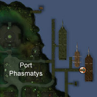
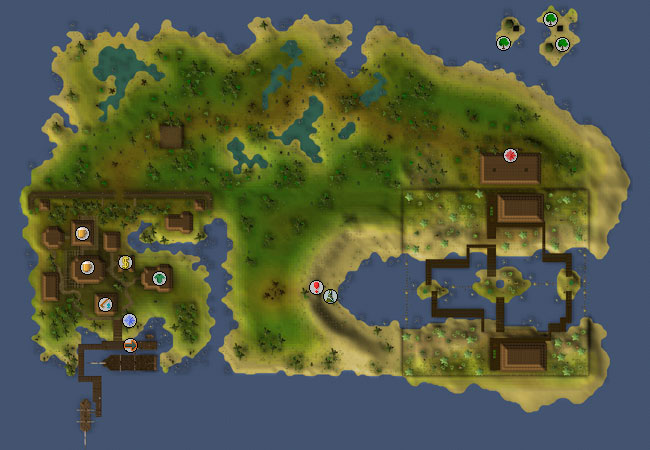
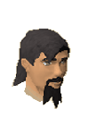

")
Mos Le'Harmless (Members)
Warning | Introduction | Location | Points of Interest | Personalities | Quests
They Not Be Pirates! | Miscellaneous
They Not Be Pirates! | Miscellaneous
Warning
You must have completed Cabin Fever to gain access to Mos Le'Harmless. You will also need a copy of the Book o' Piracy (gained during Cabin Fever) to talk to anyone in Mos Le'Harmless. You can get another Book o' Piracy by talking to Bill Teach in Mama's Tavern.
Introduction

Mos Le'Harmless be founded on a common love o' piracy, and a common lust for that old Braindeath 'rum'. The pirates thereabouts be from crews from across the whole o' RuneScape, and be a bit tired o' the seven seas and the dastardly albatrosses that be plaguin' them from dawn till dusk and all through the long 'rum'less hours.
Location

If'n ye've already met Bill, ye can head to his ship directly and he'll be takin' ye to Mos Le'Harmless.
Points of Interest

There be much to draw the landlubbers onto the ships to come to Mos Le'Harmless. In the far east o' the island be the rival 'rum' brewers, San Fan and Fancy Dan, where there be Trouble Brewing.
Just to the east o' the town be Cavey Davey, who stands about guardin' a cave where there be nameless horrors and demons o' madness - or so his yarns be spun. Ye be needin' some equipment especial (a witchwood icon, they be callin' it) to be treadin' foot in those thar caves, and a Slayer level to be rivallin' an albatross, to be sure.
Personalities
|

Bill be a pirate o' many years o' experience, indeed. But his experiences mostly be not for the best, and his crew been either a scurvy lot, a cunnin' lot or a dead lot, for they not be seen in his good company for many a sea shantyin' year. He be the first way through to Mos Le'Harmless.
|
![[image]](../../img/main/kbase/npc/area_guides/chathead/smith.gif) Smith be a pow'rfully-built pirate if ever there were one. Ye be wantin' to speak with him if ye be wantin' to own your very own cutlass; if ye be wantin' to be piratey in a proper, swashbucklin' manner, then ye be needin' a cutlass.
|
|
| Old Bill Teach be found either swiggin some 'rum' in Mama's Tavern or pacing the deck o' his lady o' the seas. | Smith be found on the docks. |
![[image]](../../img/main/kbase/npc/area_guides/chathead/patchy.gif) It were as if Patchy were a seamstress in a past life. He be talented with a needle and thread, so we be headin' to him when an albatross be havin' had a go at us with its dark and evil claws or its scurvy beak. Most be goin' to him for his sewing skills, though, for he be able to sew your eyepatch to your bandana or your pirate hat, as well as a couple of other needlepoint tasks.
|
![[image]](../../img/main/kbase/npc/area_guides/chathead/cavey_davey.gif) Cavey be his name, and cavies be his, err... job. Cavey Davey be a bit o' a mad one, even by mad pirate standards, and now he not be leavin' his post by the caves, rantin' and blatherin' about weird beasties worse than an albatross. We mostly be not believin' him, but we be stayin' away from the caves anyway. To keep close to the 'rum', ye see.
|
|
| Patchy be wanderin' the streets of Mos Le'Harmless. | Cavey Davey be rantin' at landlubbers by the entrance to the Mos Le'Harmless caves. |
![[image]](../../img/main/kbase/npc/area_guides/chathead/brass_hand_harry.gif) Brass Hand Harry be one of them 'old' pirates, so it be no surprise that he be missin' one of his swashbucklin' hands. He be usually wearin' an artificial-like one, which be made of brass. Funny it be, how pirates be gettin' their names.
|
![[image]](../../img/main/kbase/npc/area_guides/chathead/50_ships_mufassah.gif) If there be an unluckier pirate a-sailin' any o' the seas, it be Bill Teach. 50 Ships be so named on account o' his havin' lost fifty ships in his time. We don't be doubtin' that it be long before he be named 51 Ships Mufassah.
|
|
| Brass Hand Harry be spinnin' yarns up above Harpoon Joe's House of 'Rum'. | 50 Ships, the old sea whippet, be found lookin' fer a new crew on the upper decks o' Harpoon Joe's House of 'Rum'. |
Quests
Ye can be startin' the quests below in Mos Le'Harmless:
The Great Brain Robbery (Members)
Rocking Out (Members)
They Not Be Pirates!
![[image]](../../img/main/kbase/npc/area_guides/monkey.gif) Monkeys be cute landlubbers, and not too much trouble to be lookin' after. Some pirates gets a bit too close to them, mind, and starts wearin' them like they were a parrot that don't want no crackers. They be a bit peskful, and sometimes scurvy if they be wantin' a banana.
|
![[image]](../../img/main/kbase/npc/area_guides/giant_mosquito.gif) They not be albatrosses, but pirates be afear'd o' all creatures that be flyin' about and drinkin' blood, so parrots be raised on crackers alone lest they be as fearful and wicked as the albatross. Giant mosquitoes be soft and squishy, so be sure to be takin' yer giant flyswat with ye into the jungles. Or anythin', really, they not be terrible quarrelsome.
|
|
| Monkeys be scampering about in the jungles. | Giant mosquitoes be waitin' by the waters to drink blood. |
![[image]](../../img/main/kbase/npc/area_guides/snake.gif) Snakes not be big gribblies, but they be dastardly gribblies. They be tough and stringy, too, so ye can't be eatin' them (that's how Jonny the Round be gettin' so thin, ye know). They be like other snakes, though, and be easily cured o' their dastardliness with a sharp cutlass.
|
![[image]](../../img/main/kbase/npc/area_guides/jungle_horror.gif) There be beasties almost as vile as the albatross in the jungle, and they be movin' about like they be ownin' the place. A good sturdy cutlass be all ye be needin'... if'n ye be wantin' to be gettin' slain. No, jungle horrors be tough beasties, and be aggressive as well. Ye be best avoidin' the jungle till ye be sure ye can be handlin' yerself against such loathsome beasts.
|
|
| Snakes be found a-slitherin' and a-creepin' in the jungles like a mutinous cur. | Jungle horrors be leapin' from the shadows o' the jungle to attack any landlubber that be catchin' their fancy. |
Miscellaneous
- The pirate's favourite tipple, Cap'n Braindeath's 'Rum' be served in both bars, and be worth a wee look to be seein' what it does to ye.
- If ye be havin' lost yer Book o' Piracy, ye be needin' to talk to Bill Teach again so's he can be givin' ye another copy.
- The wee islands to the north-east o' the mainland be home to a set o' trees o' the teak and mahogany variety. Ye can be gettin' there via the darksome and fearsome cave that Cavey Davey be watchin'.

More articles in
Other
|
|